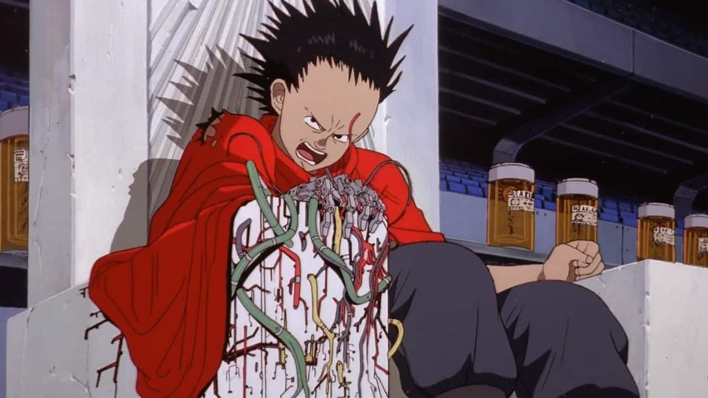
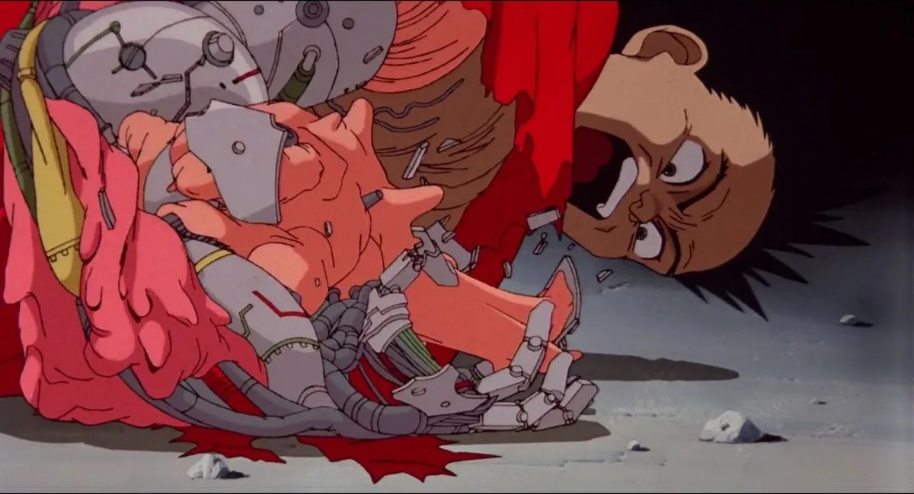
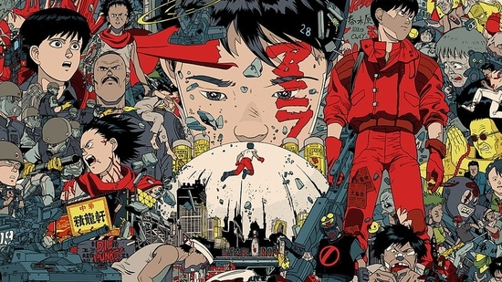

Akira: Review
God this is a masterpiece of a film.
Of course i'm in love with the retro cyberpunk avant-garde aesthetic, everything about it sent me in a deep hole of observation and yapping.
I want to start talking how iconic the anime adaptation is from a nostalgic perspective, but this storyline is top-tier.

We are introduced with the cyberpunk world of Neo-Tokyo, essentially post world war era in this universe. From an artistic perspective, so well-made and next level for its time. This cyberpunk retro-anime aesthetic has carried with me over the years and I still take inspiration from it to this day. Anyways, we are greeted with two teenagers Tetsuo and Kaneda and their weird friendship dynamic. We see the two friends progressed into a more violent direction as Tetsuo finds himself always feeling inferior to Kaneda. I guess you can say he was kind of a man baby? But his man-baby character eventually grew into something more violent as the movie progresses.

I do want to talk about the bizare body horror direction of its movie, which is clearly the main point of me writing this. Akira's direction for body horror was inspired by
Tetsuo: The Iron Man for its grotesque body horror by combining machinery and the human body. Definetely references inspired from the movie were implicated in the formation of Tetsuo's uncontrollable powers in the stadium scene.

His mutation to a mixture of metal and human flesh becomes a signature point for the movie's storyline. As shown above, his body grows incredibly insane that his own powers become uncontrollable. Leading to his ungoing character theme of inferiority repeat itself as he finds him powerless.

Rewatching this over again brings a whole different perspective as an adult, especially being able to dissect the visual story elements and finding how cool it obviously is. I hope to see more creations from the writer of Akira, as I did notice there was an ongoing production that started in 2019. But yeah, I will forever cherish this movie and its impact to me over the years.


socials